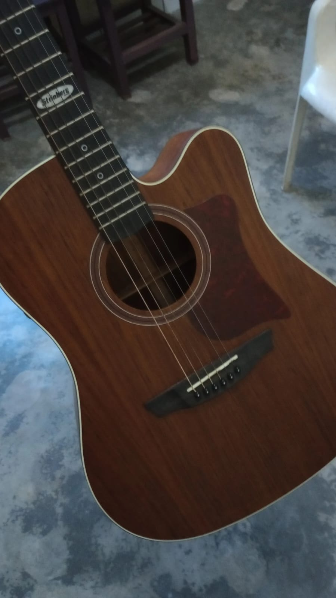

comecei a tocar violao com 13 anos, demorei um pouco para aprender o basico, mas depois de um tempo aprendi a tocar alumas musicas, principalmente do Djavan, hoje em dia raramente olho para o violao mas contiua sendo meu instrumento favorito.
